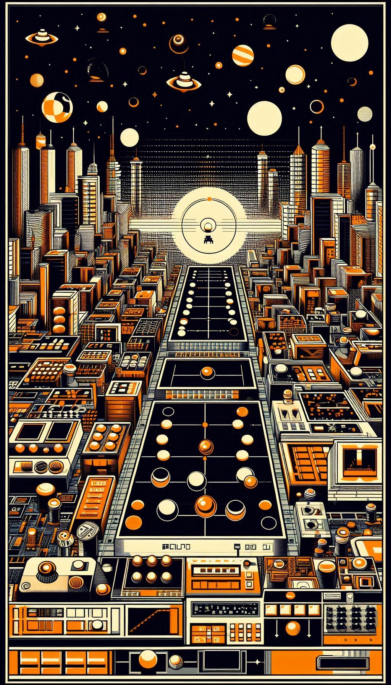

|  |
psbotsA PostScript engine developped in TypeScript
|
Nothing but...
🤔 They start with P...
👴 They were both created in the last century.
In 1992, Adobe created PDF
on top of concepts introduced by...
PostScript which was invented in 1976.
A PDF document is a structured algorithm in which pages are rendered using a program.
%PDF-1.4
% ...skipping document attributes ...
3 0 obj<</Type/Pages/Kids[4 0 R]/Count 1/MediaBox[0 0 595.32 841.92]>>
endobj
4 0 obj<</Type/Page/Parent 3 0 R/Resources<</Font<</F0 6 0 R>>>>/Contents 5 0 R>>
endobj
5 0 obj<</Length 59>>stream
BT
/F0 12 Tf % Font selection
1 0 0 1 100 702.7366667 Tm % Position
(Hello World!)Tj % Write Hello World!
ET
endstream
endobj
% ...skipping objects (including font descriptor)...
xref
0 9
0000000000 65535 f
0000000015 00000 n
0000000059 00000 n
0000000179 00000 n
0000000257 00000 n
0000000346 00000 n
0000000451 00000 n
0000000573 00000 n
0000000773 00000 n
trailer
<</Root 1 0 R/ID[<9392A59F3BE7B840805D62746E8A4F29><9392A59F3BE7B840805D62746E8A4F29>]/Info 2 0 R/Size 9>>
startxref
988
%%EOF
Hello World.pdf
PostScript is a dynamically typed,
stack-based programming language.
It is most commonly used in the publishing world,
but as a Turing complete programming language,
it can be used for many other purposes.
A long time ago, I learned PostScript to be able to process* printing streams.
I have been fascinated by the power and the simplicity of this language.
The engine relies on basic concepts :
To make an addition, push the operands first and then call the operator : 1 2 add.
The following array declaration [ 1 ] consists of :
[ : array begin ➜ pushes mark on the operand stack1 : pushes the integer 1 on the operand stack] : array close ➜ checks where is the first mark, collects values, clears the operand stack and pushes an array containing collected values.Not complete...
...And with deviations